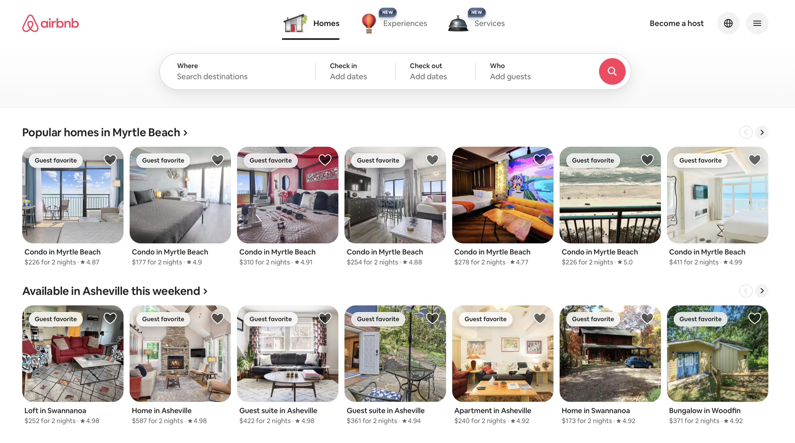
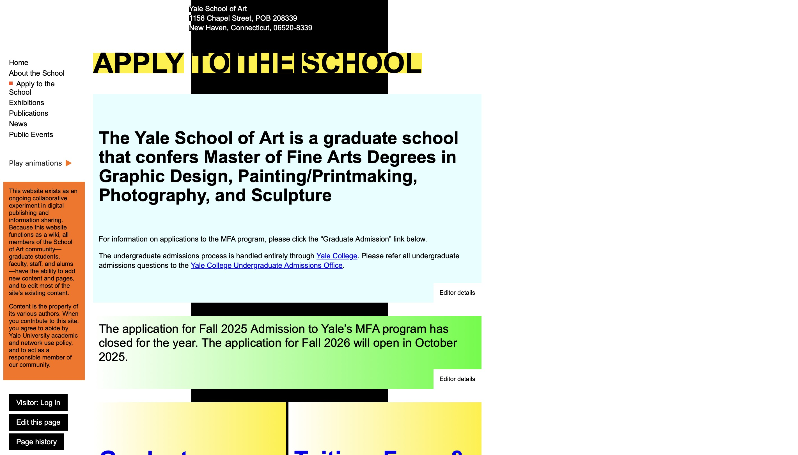

Website Evaluations
Airbnb
Airbnb is an online marketplace that connects people looking for short term place to stay when traveling. Offering apartments, houses, or unique stays like cabins and treehouse. In addition, Airbnb alse offers Experiences. where locals provide tours, classes, or activites.
- Contrast: High quality images and bold headings. Helps to differentiate key information.
- Repetition: Consistent use of buttons, search bar, and card layout. which are the same across all pages.
- Alignment: Content lines up neatly in a grid like pattern. Even when the screen size change.
- Proximity: Listings, ratings, and details are tightly grouped together for each listing card.Helps in compareing options.
Yale School of Art
The Yale School of Art website serves as the official online hub for Yale's programs, news, and student work. What makes it unique is that it functions as a collaborative bulletin board where students and faculty can post directly. This contributes to a chaotic and unstructured appearance.
- Contrast: Some parts of the page there are bad color combinations and low contrast between text and background.
- Repetition: The fonts, colors, and overal layout of are inconsistent makin each page feel different.
- Alignment: Text blocks and images are misaligned. Making it harder for the eye to follow a path.
- Proximity: Related elements are not always group together and spacing are packed together. makes it confusing to tell which sections belongs together.